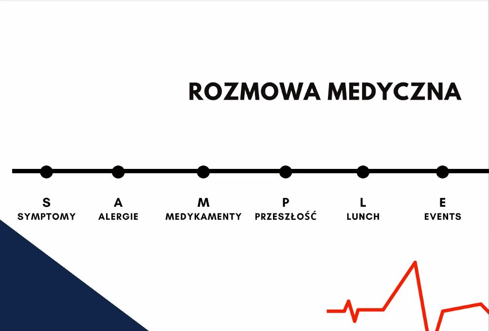
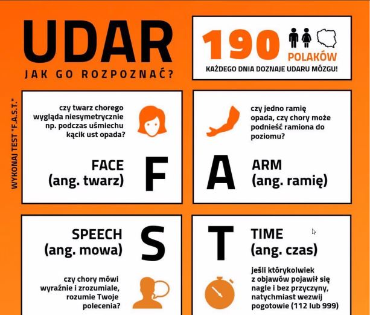
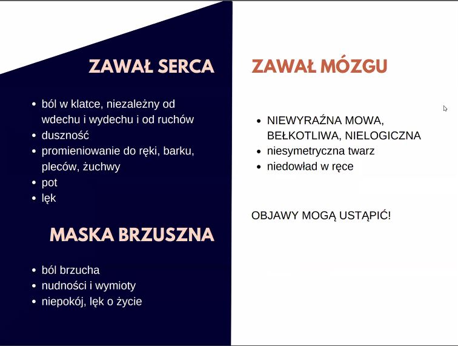

- Jaką metodę stosujemy do prowadzenia wywiadu ratunkowego:
- Poszkodowanego w wypadku drogowym należy wyciągać z pojazdu gdy:
- W trakcie prowadzenia akcji resuscytacyjnej trzeba wykonywać zawsze w proporcjach 30 uciśnięć i 2 wdechy
- Czy motocykliście po wypadku trzeba zdejmować kask?
- Przy podejrzeniu złamania kończyny należy:
- Którą stroną folii NRC (koc życia) należy owinąć poszkodowanego w oczekiwaniu na pomoc:
- Co oznaczają poszczególne litery w metodzie FAST ? (diagnoza udaru mózgu):
- W krajach rozwiniętych pierwszą przyczynę zgonu w populacji dorosłej stanowią
- Zabiegi resuscytacyjne należy prowadzić do chwili:
- Opaskę uciskową stosuje się gdy:
ABC
FACE
SAMPLE

Osoba jest nieprzytomna bez oznak życia
Pojazd znajduje się w krytycznie niebezpiecznym miejscu: skarpa, przejazd kolejowy, pali się lub zagraża mu inne niebezpieczeństwo zewnętrzne
Poszkodowany jest przytomny, nie ma widocznych obrażeń i deklaruje, że sam może chodzić
Prawda
Fałsz
Badania wskazują, że osoby niemedyczne dwukrotnie rzadziej decydują się podjąć resuscytacji z wykorzystaniem wdechów oraz jest ona 2 razy wolniejsza niż w przypadku samych ucisków i często nieskuteczna (możliwość wentylacji żołądka zamiast płuc). Ilość tlenu we krwi w początkowej fazie resuscytacji jest wystarczająca do prowadzenia akcji wyłącznie przez uciśnięcia do czasu przyjazdu służb ratunkowych. W czasach COVID wentylacja poszkodowanego bez specjalistycznego sprzętu (worek ambu) jest niezalecana.
Tak – zawsze zdejmujemy żeby ocenić stan głowy
Tak – zawsze zdejmujemy do resuscytacji
Nie – jeżeli drogi oddechowe są drożne, rozpinamy kask i odchylamy szybkę, resuscytację wykonujemy bez wdechów
Unieruchomić miejsce złamania i najbliższe stawy
Podać doustnie lek przeciwbólowy o silnym działaniu
Obandażować kończynę w celu zmniejszenia obrzęku
Żółtą do słoneczka – złota na zewnątrz
Srebrną do księżyca – srebrna na zewnątrz
Bez znaczenia, ważne żeby szczelnie okryć poszkodowanego
Face Arm Speech Time (twarz, ramię, mowa, czas)
Forhead Alergies Symptoms Time (czoło, alergie, symptomy, czas)
Face Arm Sequence Temperature (twarz, ramie, sekwencja, temperatura)
 
Wypadki drogowe
Choroby nowotworowe
Choroby układu krążenia
Przyjazdu specjalistycznych służb medycznych
Gdy poszkodowany zacznie prawidłowo oddychać
Gdy ulegniesz wyczerpaniu
Zagrażające życiu krwotoki, w szczególności w wyniku amputacji lub zmiażdżenia całej lub części kończyny
Krwotoki z kończyn nie możliwe do opanowania innymi metodami
Krwotoki z uwięzionych kończyn w miejscach trudno dostępnych dla ratowników.
Krwotoki występujące wspólnie z niedrożnością dróg oddechowych lub zatrzymaniem krążenia. Szybkie zatrzymanie krwotoku za pomocą opaski pozwala na interwencje w innym obszarze
Zdarzenia o charakterze masowym, w których ilość sił i środków nie pozwala na kontrolę krwotoków innymi metodami